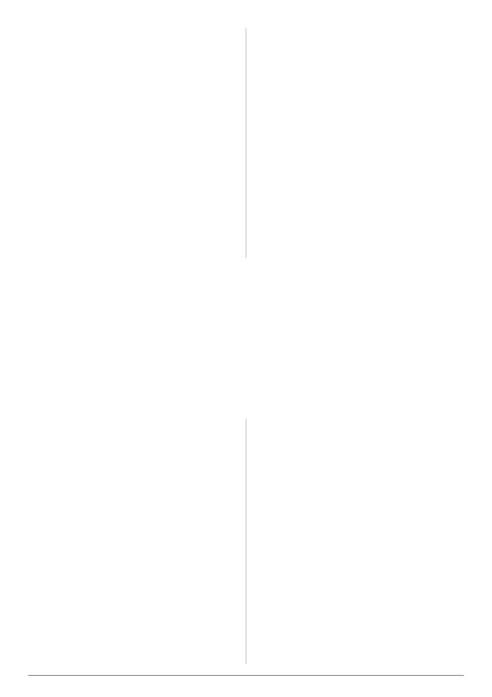

VAA AUSTRALIAN BEE JOURNAL | VOL. 109 No. 09 September 2026 | 35
Fire can scorch canopies, damage tree health and affect
flowering and nectar production. The response varies among
eucalypt species, fire intensities and seasons, but a burn that
damages mature flowering trees can reduce a food resource
extending well beyond the burn perimeter. Loss of hollow-
bearing trees also removes habitat for birds, bats, mammals and
invertebrates. Hot burns may kill animals unable to escape, while
repeated fire can simplify understorey vegetation and remove fire-
sensitive plant species.
The impacts below ground are easily overlooked. Fungi and
soil organisms are fundamental to decomposition, nutrient cycling,
plant health and the rebuilding of forest structure. When fire
consumes the litter layer and exposes soil, erosion can increase
and the microclimate at ground level can become hotter and drier.
These changes influence the vegetation that returns, and therefore
the future fuel profile as well as the future availability of forage.
None of this means that ecological values should be weighed
against community safety as though only one can be chosen.
Ecological condition can itself influence fire behaviour. Retaining
mature, relatively open and moist long-unburnt patches may
sometimes contribute both to biodiversity conservation and to a
more varied, less continuous fuel landscape.
If planned burning is being undertaken
to reduce fuel hazard, its effectiveness
should be demonstrated through robust
measurement. Yet information obtained
through freedom-of-information requests
has sometimes shown fewer than two formal
fuel-hazard assessments for burns covering
more than 100 hectares. Such limited
sampling may miss substantial variation in
vegetation, topography, burn intensity and
post-fire response.
To
examine
large
sites
more
systematically, I developed a method using a
one-hectare grid. Sampling across the grid
makes it easier to see patterns rather than
relying on one or two locations that may not represent the burn
area. It also allows burned and unburned patches to be compared
and changes to be followed over time.
Victoria has a Bushfire Monitoring Program, but program-level
reporting and computer modelling cannot replace adequate field
measurements at individual sites. Models are only as reliable as
their assumptions and input data. A tally of hectares burned is a
measure of activity, not necessarily a measure of reduced risk.
Every significant burn should have enough pre-fire assessment
to describe the existing hazard and enough post-fire monitoring
to show what changed. Monitoring should continue beyond the
first year because the initial reduction is not the whole story.
Measurements at two, three, five and, where possible, ten years
after fire would provide a much clearer picture of whether risk
reduction persists or whether dense regrowth creates a new
hazard.
The location of planned burning is as important as its ecological
effect. Burning remote bushland may contribute little to the
immediate protection of houses and communities, particularly if
the reduction lasts only a short time. Risk-reduction work should
be strategically connected to the places where it can alter fire
behaviour, improve suppression opportunities or reduce exposure
around assets.
Alternatives and complementary measures deserve greater
investment. These include careful preparation around properties;
appropriate management of vegetation close to houses; well-
designed access and defendable spaces; rapid detection and
suppression of ignitions; and targeted, manual reduction of
particular fuels where this can be done without triggering broad
regrowth.
Long-unburnt patches should be identified, monitored and
maintained as part of this strategy. They are important refuges for
wildlife and fire-sensitive plants, and they provide reference areas
against which the effects of burning can be assessed. In some forest
types, expanding and connecting these mature patches may help
retain a mosaic of vegetation structures rather than repeatedly
resetting extensive areas to young, dense regrowth.
This is not an argument for doing nothing. It is an argument for
spending resources where they produce a demonstrable benefit.
Proper assessment may show that burning is justified in one
location, unnecessary in another and likely to be counterproductive
in a third.
Members of the public, Landcare groups, naturalists and
beekeepers can all help improve the quality of decision-making.
When a planned burn is proposed, ask for the pre-burn fuel-hazard
data and the assessment of ecological values. Ask how many plots
were measured, where they were located
and how well they represent the burn area.
Ask what outcome is expected, how long the
reduction is predicted to last and what post-
burn monitoring will test that prediction.
Communities
can
also
learn
the
principles of fuel-hazard assessment and
make their own observations. Consistent
photographs, mapped plots and repeat
measurements
can
provide
valuable
local evidence. Emerging tools such as
multispectral imagery from drones may help
reveal variation in vegetation condition, burn
coverage and regrowth, although these tools
should complement, not replace, careful
work on the ground.
Concerns and evidence can be raised
with local fire-management staff, elected representatives and the
media. The most constructive message is not that all burning is
wrong, but that public safety and environmental stewardship
both require decisions to be based on site-specific evidence and
transparent monitoring.
Planned burning has become an established feature of
bushfire policy, but familiarity should not shield it from scrutiny.
The success of a program cannot be judged by the area burned.
It should be judged by whether risk was reduced, where that
reduction occurred, how long it lasted and what ecological costs
accompanied it.
In many dry forests, a burn may provide a short window of
reduced fuel followed by a longer period of increased fine fuel. In
some long-unburnt areas, fuel structure may already be relatively
favourable. Each site therefore needs careful assessment before
fire is prescribed, followed by meaningful monitoring afterwards.
The central question is simple: did this burn make the
community safer? Answering it requires evidence from the forest,
not merely confidence in a model or a target expressed in hectares.
By protecting long-unburnt refuges, improving property-level
preparedness, strengthening rapid response and applying fire only
where its benefits are likely to persist, we can pursue bushfire safety
without needlessly degrading the ecosystems on which bees, other
wildlife and people depend.
“Members of the public,
Landcare groups, naturalists
and beekeepers can all help
improve the quality of
decision-making. When a
planned burn is proposed, ask
for the pre-burn fuel-hazard
data and the assessment of
ecological values.”
A major monitoring gap
Strategies that make a difference
A more honest measure of success
What communities can ask for